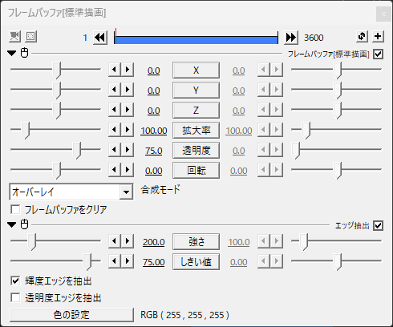
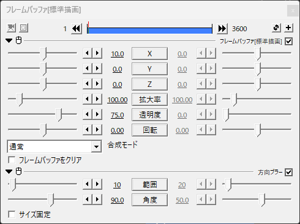
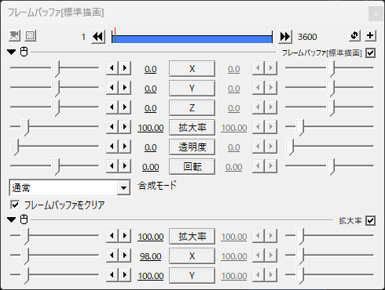
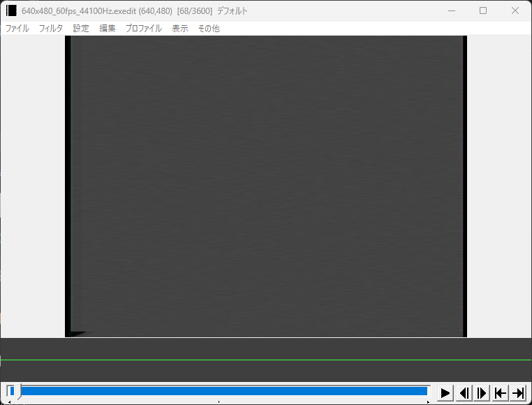

ver.1は240p用、480p用、720p用、1080p用、ver.2は480p用があります
注意事項とか
結構重いです
編集するときはエフェクトのどれかを非表示にするか画質を下げて編集することをおすすめします。
VHS風エフェクトver.1、2両方
アニメーション効果の"YMM4"の"背景塗りつぶし"が必要です =YMM4が必要(多分)
(なくても使えなくはない)
VHS風エフェクトver.2のみ
白水氏の"ノイズ"が必要です
(なくても使えなくはない)
ドット妨害風エフェクトのみ
さつき氏の"市松模様N"が必要です
使い方(雑)
1.ダウンロードしたexoファイルをaviutlのタイムラインにぶち込む
2.VHS風にしたい素材とかをぶち込む
3.できた！
調整とか解説とか
長さの調節
exoファイルには1分しかエフェクトが入ってないけど、1分より長かったり短かったりしたら長さを調節してね
VHS風エフェクトver.2
一番上のフレームバッファ
VHS独特な色合いとか輪郭とかを表現してくれるやつ

基本部分
X座標をちょっとずらすことで独特な輪郭を表現してる
透明度を上げるほどコントラストが上がる 逆に透明度を下げるほど輝度が反転する
反転
そのまんま。
上から2番目のフレームバッファ
主にVHSの基礎(?)の部分

基本部分
y座標をランダム移動させて振動させてる
色調補正
そのまんま。一番上のフレームバッファがコントラスト下げてくれてるからなんも設定変えてない
色ずれ
そのまんま。本物のVHSの映像が思ってたより色ずれしてなかったのでver.1より少し弱めた
ラスター
そのまんま。状態が悪い感じにしたかったら横幅増やすとそれっぽくなる。
シャープ
そのまんま。
透明度を上げるほどコントラストが上がる 逆に透明度を下げるほど輝度が反転する
上から3番目のフレームバッファ
画面の下の方にある少し映像がずれてるやつ

基本部分
x座標を少しずらしてる
クリッピング
画面の下にだけ表示するようにしてる
振動
そのまんま。
領域拡張
左の黒い謎の空間を作るためのやつ
アニメーション効果(背景塗りつぶし)
左の黒い謎の空間を作るためのやつ。こいつがないと下の方にある少し映像がずれてるやつはうまくいかなくなる。
境界ぼかし
何のためにつけたか忘れた()
ラスター
映像を斜めにするためのやつ
上から4番目のフレームバッファ
VHS特有の縁が浮かび上がって見えるやつ(語彙力)
正直これなくてもいいかもしれない
基本部分
透明度を下げてることによって浮かびすぎないようにしてる
エッジ抽出
白色のエッジ抽出を使うことによって再現している。ver.1よりしきい値を上げた
上から5番目のフレームバッファ
VHS特有の字幕とかの右側に見える残像みたいなやつ(語彙力)
基本部分
x座標を少しずらしてることによって方向ブラーが左側にも出ないようにしてる。透明度を下げてることによって浮かびすぎないようにしてる。
方向ブラー
方向ブラーを使うことによって再現している。範囲上げると残像(?)が見えにくくなるけど左側にも残像が出てきやがる(x座標を変えることで対処はできる)。
ノイズ
そのまんま。

基本部分
透明度をかなり上げて違和感のないノイズ(?)を実現している
"高さ"がかなりあるのは"拡大率"の部分で縦に押しつぶしているから
色調補正
このエフェクト、元々はカラフルなタイプのノイズなんだけどそれだとデジタル感が出てしまうので彩度を下げている
拡大率
さっき言った通り縦に押しつぶす用。ついでに横にも引き延ばしてさらに違和感のないノイズ(?)を実現している
方向ブラー
ぼかし的な役割で入れてる
ノイズがある時とない時の違い


上から7番目のフレームバッファ
画面の両端の黒い部分
これも本物のVHSの映像がこんな感じだったからver.2で追加した(多分デジタルに変換すると生まれる空間で、ブラウン管で見た時はこの空間は映らない)
基本部分
"フレームバッファをクリア"にチェックを入れないと黒い部分ができない
拡大率
横にほんの少しだけ押しつぶすことでそれっぽくしてる
これがある時とない時の違い
VHS風エフェクトver.1
ノイズ
そのまんま。強さの値を小さくするとノイズが濃くなるよ。

ノイズがある時とない時の違い


上から2番目のフレームバッファ

主にVHSの基礎(?)の部分
基本部分
y座標をランダム移動させて振動させてる
色調補正
そのまんま。ちょっとコントラストを下げてある。
色ずれ
そのまんま。
ぼかし
そのまんま。
ラスター
そのまんま。状態が悪い感じにしたかったら横幅増やすとそれっぽくなる。
シャープ
そのまんま。
上から3番目のフレームバッファ
画面の下の方にある少し映像がずれてるやつ
基本部分
x座標を少しずらしてる
クリッピング
画面の下にだけ表示するようにしてる
振動
そのまんま。
領域拡張
左の黒い謎の空間を作るためのやつ
アニメーション効果(背景塗りつぶし)
左の黒い謎の空間を作るためのやつ。こいつがないと下の方にある少し映像がずれてるやつはうまくいかなくなる。
境界ぼかし
何のためにつけたか忘れた()
ラスター
映像を斜めにするためのやつ


上から4番目のフレームバッファ
VHS特有の縁が浮かび上がって見えるやつ(語彙力)
基本部分
透明度を下げてることによって浮かびすぎないようにしてる
エッジ抽出
白色のエッジ抽出を使うことによって再現している。しきい値を下げてるのは浮かびすぎてたから。

上から5番目のフレームバッファ
VHS特有の字幕とかの右側に見える残像みたいなやつ(語彙力)
基本部分
x座標を少しずらしてることによって方向ブラーが左側にも出ないようにしてる。透明度を下げてることによって浮かびすぎないようにしてる。
方向ブラー
方向ブラーを使うことによって再現している。範囲上げると残像(?)が見えにくくなるけど左側にも残像が出てきやがる(x座標を変えることで対処はできる)。

ドット妨害風エフェクト
一番上のフレームバッファ
模様が輪郭だけ出てくるようにしてくれるやつ
基本部分
透明度を上げることでちょうどいい濃さにしてる(語彙力)
エッジ抽出
これを使って輪郭だけ出るようにしてる

市松模様N
メインの部分的なやつ
基本部分
解像度が高い動画で使うときは"サイズ"を2～4くらいに上げるとそれっぽくなるかも
"縦回数"、"横回数"はそんなにいじらなくても大丈夫
画像ループ
"速度Y"であの動きをつけてる
解像度が高い動画でなおかつ"サイズ"が1のままの時は"縦回数"と"横回数"の数値を上げないと全体にエフェクトをかけられない

その他
利用について
ご自由に使ってどうぞ。商用利用とかも可。クレジットとかもなくてもおｋ
VHSの下の方に出てくる白い線状のノイズはネックOPNさんの動画を参考に...動画が消えている...だと...！？